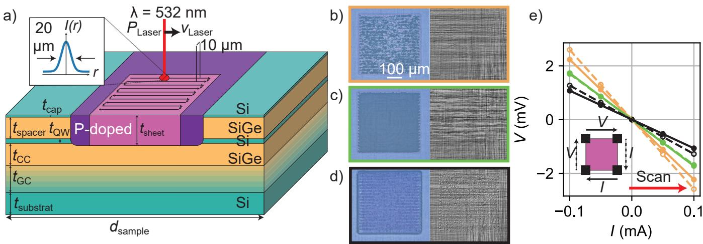
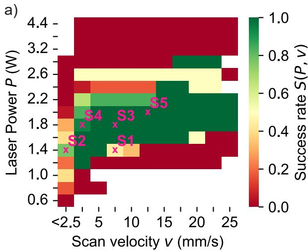
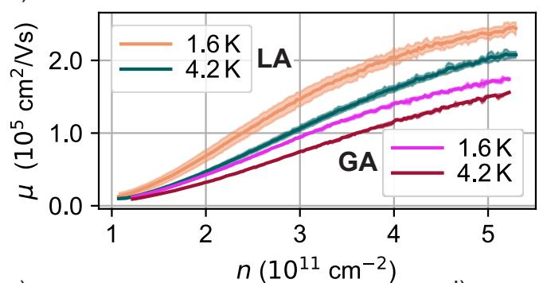

工艺矛盾：为什么全局退火是瓶颈
硅的固相外延再结晶需要 550 °C 以上，实际工艺受退火时间与载流子冻析（freezing-out，低温下施主不完全电离会导致接触断电、量子阱不可及）双重约束，通常要全局加热到 700 °C 以上。对 Si/SiGe 量子芯片这是三重伤害：原子扩散与界面互混模糊异质界面；高温推进失配位错穿透应变硅量子阱、降低张应力并增加散射中心；单层精度的 Ge 浓度补偿剖面（为提高谷劈裂而专门设计的）被热扩散抹平——而谷劈裂不足恰被认为是 Si/SiGe 量子计算扩展的主要瓶颈。理想工艺因此是只在接触区高温、有源区保持冷。
激光退火：光斑里的固相外延
工艺用波长 532 nm（按异质结吸收仿真选定）的连续激光，功率 0.2–8 W、高斯光斑直径 20 µm，逐行扫描（行距 10 µm、速度 0.1–25 mm/s），快门（10 ms 响应）保证只照射指定区域。再结晶机制是自下而上的固相外延：温度未达熔点时，损伤层按 Arrhenius 式速率从底部向上外延愈合；功率继续升高越过约 1220 °C（异质结熔点）时局部出现液相、表面形貌被破坏——工艺窗口就卡在这两者之间。
纯光学的快速标定是这套工艺可用性的关键：注入损伤（非晶区）与结晶区光学性质不同、颜色不同，退火后用光学显微镜与 c-DIC（圆偏振差分干涉对比）检查颜色均匀性即可判断再结晶完整度与表面是否损伤，无需额外微加工。{低功率/高速度}组合给出不均匀颜色变化（部分再结晶），{功率升/速度降}达到均匀变色（完全愈合），再过头则出现亮点（局部熔化）——三档判据直接映射成功率。

激光退火与工艺评估：532 nm 连续激光在磷注入区（紫）内逐行扫描（黑线）指定区域（粉），快门防止区域外加热；插图为不同 {P, v} 组合退火后 400×400 µm 方块的光学/c-DIC 检查与室温 I–V 特性——颜色均匀且 I–V 线性即为成功判据。图源：Neul et al. (2024), Fig. 1。成功率窗口与异质结依赖
对四块晶圆系统扫描 {P, v} 参数并统计成功率。单个参数组的成功率定义为
其中 是光学判据下成功（颜色均匀且表面无损伤）的退火方块数、 是该参数组退火的总方块数；把 沿速度（功率）轴平均得到投影 （），用于比较各晶圆的窗口位置。扫描得到一个窄功率、宽速度的窗口：扫描速度不敏感，激光功率是决定性参数。更关键的发现是最优功率随异质结显著变化——晶圆 A 与 B 之间相差近 2 倍，尽管两者量子阱上方的层叠几乎相同。归因分析指向虚衬底（virtual substrate）：SiGe 导热比硅差，虚衬底相当于串联的热阻；线性渐变缓冲的 A/D 晶圆虚衬底总厚约为台阶渐变的 B/C 的两倍，功率窗口随之分组移动，而 Si 衬底厚度（725 vs 425 µm）反而无系统影响——薄衬底仍是足够的热沉。每换一代异质结设计，用光学检查法重新标定功率窗口即可跟上迭代。

成功率 标定图（晶圆 A）：绿色高成功率窗口在激光功率方向窄、扫描速度方向宽——功率是最关键参数；投影显示四块晶圆的最优功率分组移动（由虚衬底热阻决定），换异质结须重新标定功率。图源：Neul et al. (2024), Fig. 2。低温性能基准
用栅控 Hall bar 对比激光退火与全局退火参考：1.6 K 下接触电阻与电子迁移率持平或更优，量子阱电导在深低温正常工作——载流子冻析问题被充分激活的施主避免。这证明局部激光退火在不牺牲有源区（界面、应变、Ge 剖面）的前提下，提供了与全局退火等价的电学接触质量。

低温输运基准：栅控 Hall bar 的电子迁移率 µ 随电子密度 n 的变化（激光退火 vs 全局退火参考）——1.6 K 下接触电阻与迁移率持平或更优，接触在深低温正常工作。图源：Neul et al. (2024), Fig. 4(a)。适用条件与边界
- 对象是”注入 + 再结晶”型接触：适用于磷注入的 Si/SiGe 接触方案；抬起式（raised）外延接触等不依赖注入损伤再结晶的路线不在此列。
- 工艺窗口逐晶圆标定：激光功率窗口依赖虚衬底热阻，每次异质结迭代都需（好在廉价的）光学重新标定。
- 表面形貌是红线：越过熔点的参数组会改变表面形貌，为保持后续光刻工艺一致性而排除。
- 与全局退火的分工：追求最大热预算压缩（单层 Ge 剖面、高谷劈裂设计）时 LA 是唯一选项；对界面不那么敏感的常规器件，全局退火仍是简单选择。
与其他概念的关系
- Si/SiGe 异质结：本词条是其接触工艺的专门方案——非掺杂异质结的欧姆接触是平台流程的必经环节，LA 把热预算从全片压到接触区。
- 谷劈裂：全局退火对 Ge 浓度剖面与界面锐度的热损伤直接压缩谷劈裂；LA 通过保护这些设计元素间接服务于高谷劈裂器件。
- 电荷噪声：界面与应变质量的保全同时抑制散射中心与缺陷密度，是低噪声器件的材料侧配套。
- 界面缺陷：热扩散与位错穿透增加的界面缺陷既是散射源也是 TLS 噪声源，LA 的局部性从工艺上回避了这一增量。
- 二维载流子气：接触的最终功能是把量子阱中的二维电子气接引到外部电路，低温下的接触电阻直接决定测量带宽与信噪比。
参考文献
- Neul, M., Sprave, I. V., Diebel, L., Zinkl, L. G., Fuchs, F., et al. Local laser-induced solid-phase recrystallization of phosphorus-implanted Si/SiGe heterostructures for contacts below 4.2 K. Physical Review Materials 8, 043801 (2024). DOI: 10.1103/PhysRevMaterials.8.043801；arXiv:2312.06267（QAtlas 缓存：2312.06267）。
完整文献库（含各篇站内全文页）见 参考文献库。